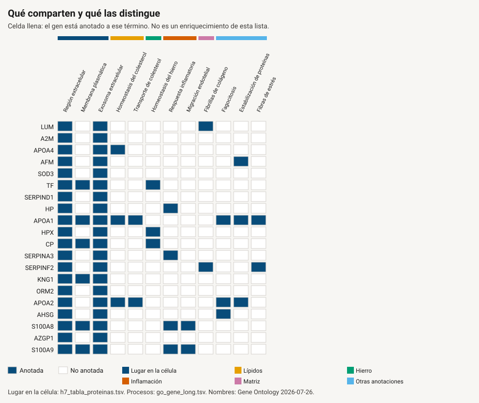

Un flujo reproducible para proteómica pública. El caso es el cáncer colorrectal.
Proteínas candidatas
Son candidatas computacionales. Hace falta medirlas en otras personas, con otro diseño, antes de saber si el cambio se repite. Ninguna cifra de esta página sirve para un diagnóstico, un seguimiento o un tratamiento.
La corrida sellada v3.7 (run 71b310a3) ordena las proteínas en una cadena. Empieza con 688 que cambian en el tejido de CPTAC. De esas, 135 se miden en el tejido de Tanaka con el mismo signo, 118 tienen en el Human Protein Atlas una anotación de secreción a la sangre o una concentración plasmática, y 20 se miden en la matriz principal del suero PXD055218. Ninguna de las 20 es diferente entre cáncer y colonoscopia negativa con el mismo signo que en el tejido. El archivo lo resume así: nadie pasa ese paso. La tesis usa la misma lista y la misma lectura: proteínas para estudiar en cohortes futuras, no biomarcadores.
Dieciocho bajan en el tumor de CPTAC y dos, S100A8 y S100A9, suben. En Tanaka el signo coincide, pero el valor q de Tanaka no baja de 0,05: la coincidencia es de dirección, no de significación. En el suero, frente a colonoscopia negativa, la clase es equivalente o indeterminada. Equivalente quiere decir que, si hay un cambio, cabe en menos de 1,5 veces. Indeterminada quiere decir que el estudio no alcanza para decidir.
En la tabla de la tesis, el símbolo que va con log2FC −1,13 y q 1,5 × 10⁻⁶ aparece como HS. En priorizacion.tsv ese símbolo es HP, la haptoglobina, con el mismo log2FC y el mismo valor q. Esta página usa el archivo.
La tabla
Pulse un encabezado para ordenar. El log2FC es el cambio en logaritmo base 2: 1 es el doble y −1 es la mitad. El valor q es el p ajustado por Benjamini-Hochberg. CPTAC es tumor frente a tejido normal adyacente. Tanaka es tumor primario frente a mucosa. El suero es PXD055218: la columna CN es cáncer frente a colonoscopia negativa, el contraste principal. «Frente a sanos» es otro contraste, medido al final del bloque, y no sustituye al principal. |SHAP| es la media del valor absoluto de SHAP en el modelo M2. Un guion quiere decir que la proteína no está entre las 20 variables con más peso. El archivo no guarda coeficientes ni una frecuencia de selección.
Veinte proteínas medidas en el suero que no pasan el contraste principal.
Números: results/v3_7/priorizacion.tsv (log2FC y q de CPTAC), triangulacion.tsv (Tanaka), k4_genes_maxlfq_crc_frente_a_colonoscopia_negativa.tsv y k4_genes_maxlfq_crc_frente_a_sanos.tsv (suero), ml_explicacion.tsv (SHAP). El acceso de UniProt sale de metadata/protein_id_maps/gene_uniprot_human_reviewed_bulk.tsv. La ficha de cada proteína, en UniProtKB 2026_04, se consultó el 20 de noviembre de 2026 (The UniProt Consortium, 2025).
Qué términos comparten y cuáles las distinguen
La corrida no calculó un enriquecimiento de Gene Ontology para estas veinte proteínas. El enriquecimiento que sí existe es el del tejido entero: en CPTAC hay 17 términos entre las proteínas que suben y 63 entre las que bajan, y el GSEA deja 64 términos con FDR de hasta 0,25 (go_tejido.json). Esos procesos, en la tesis, son sobre todo traducción, procesamiento de ARN y reparación del ADN. Ninguno de estos 20 genes está en el borde delantero de un término con ese FDR (gsea_tejido.tsv). El enriquecimiento del tejido no describe a esta lista.
La matriz de abajo responde otra pregunta: qué anotaciones comparten entre ellas. Las tres primeras columnas salen de la corrida. Son las variables de lugar en la célula guardadas en h7_tabla_proteinas.tsv: región extracelular, membrana plasmática y exosoma extracelular. Las demás columnas salen de la tabla de anotación que el flujo ya usa, metadata/gene_ontology/go_gene_long.tsv. Un proceso entra si lo comparten al menos tres genes, o si lo comparten dos y, además, el término es significativo en el análisis de sobrerrepresentación de CPTAC en la misma dirección que el log2FC de esos genes. Si varios términos tienen exactamente los mismos genes, la figura se queda con el de menor valor q. Los nombres oficiales se leyeron el 20 de noviembre de 2026 en Gene Ontology, versión releases/2026-07-26 (The Gene Ontology Consortium, 2023). Esa lectura de nombres es anotación externa. No es un resultado nuevo de la corrida.

Celda llena: el gen está anotado a ese término. Celda vacía: no lo está.
No dice que el término esté enriquecido por culpa de esa proteína, ni que el proceso cambie en la sangre. Las tres columnas de lugar en la célula son variables de la corrida. El resto es la anotación que el flujo tenía guardada, con nombres de Gene Ontology 2026-07-26.
Lo que comparten casi todas: región extracelular y exosoma extracelular. Las distingue la membrana plasmática, presente en TF, APOA1, CP, KNG1, S100A8 y S100A9.
En procesos biológicos, APOA1, APOA2 y APOA4 comparten la homeostasis del colesterol. APOA1 y APOA2, sin APOA4, comparten además el transporte de colesterol. TF, HPX y CP comparten la homeostasis del hierro. HP, SERPINA3, S100A8 y S100A9 comparten la respuesta inflamatoria. S100A8 y S100A9 comparten la migración endotelial; los mismos dos genes también están anotados a quimiotaxis de neutrófilos y a defensa contra bacterias, términos que la figura no repite porque el conjunto de genes es el mismo. LUM y SERPINF2 comparten la organización de fibrillas de colágeno. AHSG, APOA1 y APOA2 comparten una anotación de fagocitosis. AFM, APOA1 y APOA2 comparten estabilización de proteínas. APOA1 y SERPINF2 comparten una anotación de fibras de estrés.
La figura la escribe scripts/web/candidatas_sitio.py a partir de esos archivos. No modifica results/.
Fichas
Cada ficha separa tres cosas: qué dice UniProt de la proteína, qué se vio en esta corrida y por qué alguien podría querer mirarla otra vez. La tercera frase no es una utilidad clínica.
Apolipoproteínas: APOA1, APOA2 y APOA4
Qué hace la proteína. Según UniProtKB 2026_04, consultada el 20 de noviembre de 2026, APOA1 (P02647) participa en el transporte de colesterol desde los tejidos hacia el hígado y es cofactor de la enzima que esterifica el colesterol. APOA2 (P02652) puede estabilizar las HDL, las lipoproteínas de alta densidad. APOA4 (P06727) es un componente de las HDL y de los quilomicrones, y la ficha le atribuye un papel posible en la secreción de partículas que transportan grasa. Es anotación externa, no una medición de este estudio (The UniProt Consortium, 2025).
Qué se vio. Las tres bajan en el tumor de CPTAC y el signo se repite en Tanaka, sin valor q menor de 0,05 en Tanaka. En el suero, frente a colonoscopia negativa, APOA1 y APOA4 son equivalentes y APOA2 es indeterminada. El signo del suero no copia al del tejido: APOA4 sube un poco (log2FC 0,14) y APOA2 baja (log2FC −0,45). Frente a personas sanas, APOA4 es más baja en la colonoscopia negativa (log2FC −1,32, clase diferente). APOA2 está entre las variables con más |SHAP| en M2 (0,081) y, tras el ajuste, se relaciona con la coagulación y con la piel. SHAP explica al modelo, no al tumor.
Por qué podría importar. Son proteínas abundantes, de las que un suero sin depleción sí alcanza a medir. La tesis lee la bajada en el tumor como el desplazamiento de tejido sano, no como una liberación del tumor a la sangre. Seguirlas en otra cohorte preguntaría si esa bajada se repite. No propone una prueba.
Hierro y hemo: TF, CP, HPX y HP
Qué hace la proteína. La transferrina (TF, P02787) transporta hierro. La ceruloplasmina (CP, P00450) oxida el hierro para que la transferrina pueda cargarlo. La hemopexina (HPX, P02790) une el hemo y lo lleva al hígado. La haptoglobina (HP, P00738) captura la hemoglobina libre del plasma. Textos de función de UniProtKB 2026_04, consulta del 20 de noviembre de 2026.
Qué se vio. Las cuatro bajan en el tumor de CPTAC, con el mismo signo en Tanaka y sin significación allí. En el suero, frente a colonoscopia negativa, TF, HPX y CP son equivalentes, con cambios pequeños. HP va al revés que en el tejido (log2FC 0,70) y queda indeterminada. Ninguna de las cuatro está entre las 20 variables de más |SHAP| en M2.
Por qué podría importar. Comparten, en la anotación del flujo, la homeostasis del hierro (TF, HPX y CP). HP comparte con otras la respuesta inflamatoria. Son proteínas de la sangre que el tumor, en estos datos, no separa de la colonoscopia negativa. Una cohorte más grande podría decir si el cambio de HP es real. Esta no lo dice.
Inhibidores y coagulación: A2M, SERPINA3, SERPIND1, SERPINF2 y KNG1
Qué hace la proteína. La alfa-2-macroglobulina (A2M, P01023) inhibe proteasas atrapándolas. La alfa-1-antiquimotripsina (SERPINA3, P01011) puede inhibir proteasas de neutrófilos y de mastocitos; UniProt dice que su función fisiológica no está clara. El cofactor II de la heparina (SERPIND1, P05546) inhibe la trombina cuando hay heparina o dermatán sulfato. La alfa-2-antiplasmina (SERPINF2, P08697) inhibe la plasmina. El cininógeno-1 (KNG1, P01042) ayuda a colocar proteínas de la coagulación junto al factor XII e inhibe proteasas de tiol. Anotación externa de UniProtKB 2026_04, 20 de noviembre de 2026.
Qué se vio. Las cinco bajan en el tumor de CPTAC y conservan el signo en Tanaka, sin q de Tanaka menor de 0,05. Frente a colonoscopia negativa, A2M, SERPIND1, SERPINF2 y KNG1 son equivalentes. SERPINA3 es indeterminada (log2FC 0,56 en el suero, signo contrario al del tejido). Ninguna entra en las 20 de más |SHAP|.
Por qué podría importar. La tesis las agrupa con las proteínas abundantes del plasma, más bajas en el tumor que en la mucosa. La coagulación también cambia por el tubo, el tiempo y el orden de medición (Geyer y colaboradores, 2019). Por eso un cambio de estas proteínas en el suero, aquí, no se puede leer como una señal del tumor.
Otras proteínas abundantes: AFM, ORM2, AHSG, AZGP1, LUM y SOD3
Qué hace la proteína. La afamina (AFM, P43652) transporta moléculas poco solubles en agua, entre ellas la vitamina E; parte de esa frase está marcada como probable en UniProt. El orosomucoide 2 (ORM2, P19652) transporta ligandos hidrofóbicos y la ficha lo relaciona con la fase aguda. La alfa-2-HS-glucoproteína (AHSG, P02765) tiene afinidad por el calcio. La zinc-alfa-2-glucoproteína (AZGP1, P25311) estimula, según la ficha, la degradación de lípidos en el adipocito; este estudio no midió esa degradación. La lumicana (LUM, P51884) no tiene comentario de función en UniProtKB 2026_04. Las palabras clave de la ficha dicen matriz extracelular, proteoglicano y secretada, y la tabla GO del repositorio la anota a la organización de fibrillas de colágeno. La superóxido dismutasa extracelular (SOD3, P08294) convierte el superóxido en peróxido de hidrógeno fuera de la célula. Consulta del 20 de noviembre de 2026.
Qué se vio. Las seis bajan en CPTAC y el signo se repite en Tanaka. Frente a colonoscopia negativa, AZGP1 es equivalente y las otras cinco son indeterminadas, salvo LUM, que es equivalente (log2FC −0,35). AFM tiene |SHAP| 0,096 y LUM 0,090, ambas entre las 20 más altas de M2, y las dos se relacionan con la calidad de la muestra o con el orden. SOD3 es la única de las veinte cuya dirección en el colon coincide con la de al menos cuatro de otros carcinomas en h5_especificidad_organo.tsv (clase pan_carcinoma). Esa clase se informa y no elimina proteínas. TF, en la otra ficha, quedó sin clasificar.
Por qué podría importar. LUM y SERPINF2 son las que la matriz separa por la matriz extracelular. SOD3 es la que la corrida marca como compartida con otros carcinomas. En el suero, ninguna de las seis pasa el criterio. Quedan como nombres para una cohorte futura, no como marcadores.
Calprotectina: S100A8 y S100A9
Qué hace la proteína. S100A8 (P05109) y S100A9 (P06702) unen calcio y zinc y participan en la inflamación. Juntas forman la calprotectina. La ficha de S100A8 dice que puede atraer neutrófilos. Anotación de UniProtKB 2026_04, 20 de noviembre de 2026.
Qué se vio. Son las dos que suben en el tumor de CPTAC (log2FC 1,16 y 1,06). El signo se repite en Tanaka (1,58 y 1,60) sin q menor de 0,05. En el suero, frente a colonoscopia negativa, quedan indeterminadas (log2FC 0,32 y 0,90). No están entre las 20 de más |SHAP|.
Por qué podría importar. La tesis recuerda que la calprotectina también sube en la enfermedad inflamatoria intestinal, y que la colonoscopia negativa incluye a esas personas. Por eso no se espera que esta pareja separe el cáncer de ese grupo. El resultado de la corrida es compatible con esa lectura y no la demuestra. No es un marcador de tamización.
Cambios del suero que no pasaron el criterio
La tesis nombra, aparte de las veinte, cuatro proteínas con un cambio apreciable entre cáncer y colonoscopia negativa que no alcanza el criterio: SAA1, CRP, LBP y LRG1. No están en la lista de veinte. En priorizacion.tsv SAA1, CRP y LBP ni siquiera son diferenciales certificadas en CPTAC, y LRG1 no llega a medirse con el mismo signo en Tanaka. Son ejemplos de la potencia del estudio, no una segunda lista de candidatas del tejido.
Cuatro proteínas indeterminadas en el contraste principal, con el cambio que cita la tesis.
SAA1 es unas 3,4 veces más alta en cáncer que en colonoscopia negativa, y aun así la clase es indeterminada: con veinte personas por grupo el valor q no pasa el corte. Frente a personas sanas, SAA1, LBP y LRG1 sí quedan en la clase diferente, y suben. CRP no. La tesis las lee como proteínas de fase aguda (Gabay y Kushner, 1999): una señal que puede compartirse con otras enfermedades intestinales y que, además, está confundida con el orden de medición, porque las personas sanas se midieron al final. Son candidatas para una cohorte más grande, no hallazgos.
Nada de esta página es una prueba de sangre. El camino de una proteína candidata a un uso clínico es otra fase, que este trabajo no recorre (Pepe y colaboradores, 2001).